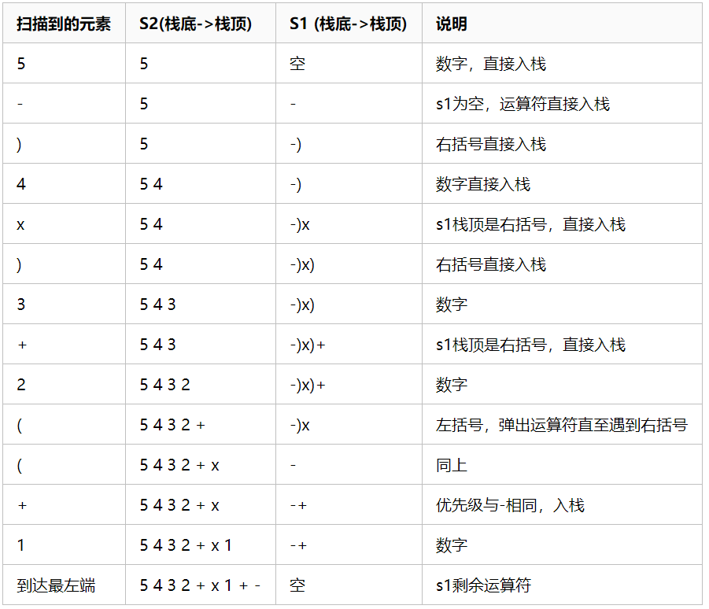
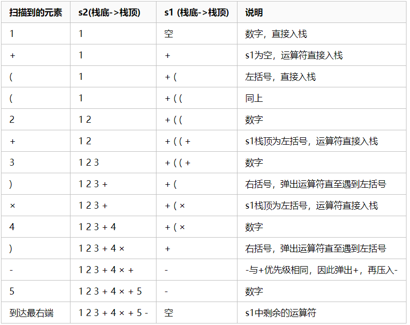

前缀、中缀、后缀表达式(逆波兰表达式)整体介绍
前缀表达式、中缀表达式、后缀表达式都是四则运算的表达方式,用以四则运算表达式求值 ,即数学表达式的求值
一、中缀表达式
1.1、简介
中缀表达式就是常见的运算表达式，如(3+4)×5-6
二、前缀表达式
2.1、简介
前缀表达式又称波兰式，前缀表达式的运算符位于操作数之前
比如:- × + 3 4 5 6
2.2、如何通过前缀表达式来求值
从右至左扫描表达式，遇到数字时，将数字压入堆栈，遇到运算符时，弹出栈顶的两个数，用运算符对它们做相应的计算（栈顶元素 op 次顶元素），并将结果入栈；重复上述过程直到表达式最左端，最后运算得出的值即为表达式的结果
例如:- × + 3 4 5 6
- 从右至左扫描，将6、5、4、3压入堆栈
- 遇到+运算符，因此弹出3和4（3为栈顶元素，4为次顶元素，注意与后缀表达式做比较），计算出3+4的值，得7，再将7入栈
- 接下来是×运算符，因此弹出7和5，计算出7×5=35，将35入栈
- 最后是-运算符，计算出35-6的值，即29，由此得出最终结果
2.3、将中缀表达式转换为前缀表达式
转换步骤如下:
- 初始化两个栈:运算符栈s1，储存中间结果的栈s2
- 从右至左扫描中缀表达式
- 遇到操作数时，将其压入s2
- 遇到运算符时，比较其与s1栈顶运算符的优先级
- 如果s1为空，或栈顶运算符为右括号“)”，则直接将此运算符入栈
- 否则，若优先级比栈顶运算符的较高或相等，也将运算符压入s1
- 否则，将s1栈顶的运算符弹出并压入到s2中，再次转到(4-1)与s1中新的栈顶运算符相比较
- 遇到括号时
- 如果是右括号“)”，则直接压入s1
- 如果是左括号“(”，则依次弹出S1栈顶的运算符，并压入S2，直到遇到右括号为止，此时将这一对括号丢弃
- 重复步骤2至5，直到表达式的最左边
- 将s1中剩余的运算符依次弹出并压入s2
- 依次弹出s2中的元素并输出，结果即为中缀表达式对应的前缀表达式
例如:1+((2+3)×4)-5具体过程，如下表

结果是:- + 1 × + 2 3 4 5
三、后缀表达式(逆波兰表达式)
3.1、简介
后缀表达式又称逆波兰表达式,与前缀表达式相似，只是运算符位于操作数之后
比如:3 4 + 5 × 6 -
3.2、后缀表达式计算机求值
与前缀表达式类似，只是顺序是从左至右：
从左至右扫描表达式，遇到数字时，将数字压入堆栈，遇到运算符时，弹出栈顶的两个数，用运算符对它们做相应的计算（次顶元素 op 栈顶元素），并将结果入栈；重复上述过程直到表达式最右端，最后运算得出的值即为表达式的结果
例如后缀表达式“3 4 + 5 × 6 -”：
- 从左至右扫描，将3和4压入堆栈；
- 遇到+运算符，因此弹出4和3（4为栈顶元素，3为次顶元素，注意与前缀表达式做比较），计算出3+4的值，得7，再将7入栈；
- 将5入栈；
- 接下来是×运算符，因此弹出5和7，计算出7×5=35，将35入栈；
- 将6入栈；
- 最后是-运算符，计算出35-6的值，即29，由此得出最终结果。
3.3、将中缀表达式转换为后缀表达式步骤
与转换为前缀表达式相似，步骤如下：
- 初始化两个栈：运算符栈s1和储存中间结果的栈s2；
- 从左至右扫描中缀表达式；
- 遇到操作数时，将其压s2；
- 遇到运算符时，比较其与s1栈顶运算符的优先级：
- 如果s1为空，或栈顶运算符为左括号“(”，则直接将此运算符入栈；
- 否则，若优先级比栈顶运算符的高，也将运算符压入s1（注意转换为前缀表达式时是优先级较高或相同，而这里则不包括相同的情况）；
- 否则，将s1栈顶的运算符弹出并压入到s2中，再次转到(4-1)与s1中新的栈顶运算符相比较；
- 遇到括号时：
- 如果是左括号“(”，则直接压入s1；
- 如果是右括号“)”，则依次弹出s1栈顶的运算符，并压入s2，直到遇到左括号为止，此时将这一对括号丢弃；
- 重复步骤2至5，直到表达式的最右边；
- 将s1中剩余的运算符依次弹出并压入s2；
- 依次弹出s2中的元素并输出，结果的逆序即为中缀表达式对应的后缀表达式（转换为前缀表达式时不用逆序）
例如，将中缀表达式“1+((2+3)×4)-5”转换为后缀表达式的过程如下：

因此结果为“1 2 3 + 4 × + 5 -”
3.4、C语言实现中缀表达式变后缀表达式
#include <stdio.h>
#include <stdlib.h>
typedef struct Node
{
char ele;
struct Node * next;
}Node;
typedef Node * Stack;
Stack MakeStack(void)//新建栈并返回栈顶
{
Stack S = (Node *)malloc(sizeof(Node));
S->next = NULL;
return S;
}
void MakeNUll(Stack S)//置空栈
{
S->next = NULL;
}
void Pop(Stack S)//将栈顶弹出
{
Stack temp = S->next;
S->next = temp->next;
}
void Push(Stack S, char c)//将新节点压入栈
{
Stack temp = (Node *)malloc(sizeof(Node));
temp->ele = c;
temp->next = S->next;
S->next = temp;
}
Stack FindHead(Stack S)//返回栈顶
{
Stack temp = S->next;
return temp;
}
void PrintHead(Stack S)//打印栈顶元素
{
Stack temp = S->next;
printf("%c", temp->ele);
}
int main(void)
{
Stack S = MakeStack();
int i = 0;
char str[200];
printf("Type something.\n");
gets(str);
while(str[i] != '\0')
{
if(str[i] == '+' || str[i] == '-')//如果str[i]是加号或减号，则先弹出栈顶直到栈已空或栈顶元素为左括号，再将str[i]压入栈
{
if(FindHead(S) == NULL)//若栈已空时，栈顶指针为空，找不到其元素，故须单独讨论
{
Push(S, str[i]);
}
else
{
while(FindHead(S)->ele == '+' || FindHead(S)->ele == '-' || FindHead(S)->ele == '*' || FindHead(S)->ele == '/')
{
PrintHead(S);
Pop(S);
}
Push(S, str[i]);
}
}
else if(str[i] == '*' || str[i] == '/')//如果str[i]是乘号或除号，则只有栈顶也是乘除号时才需要弹出
{
if(FindHead(S) == NULL)
{
Push(S, str[i]);
}
else
{
while(FindHead(S)->ele == '*' || FindHead(S)->ele == '/')
{
PrintHead(S);
Pop(S);
}
Push(S, str[i]);
}
}
else if(str[i] == '(')//如果str[i]是左括号则直接压入栈
{
Push(S, str[i]);
}
else if(str[i] == ')')//如果str[i]是右括号，则打印并弹出栈中第一个左括号前的所有操作符，最后将此左括号直接弹出
{
while(FindHead(S)->ele != '(')
{
PrintHead(S);
Pop(S);
}
Pop(S);
}
else//如果str[i]不是操作符则直接打印
{
printf("%c", str[i]);
}
i++;
}
while(FindHead(S) != NULL)//遍历后如果栈不为空，则弹出所有操作符
{
PrintHead(S);
Pop(S);
}
return 0;
}3.5、C语言实现逆波兰计算器
#include <stdio.h>
#include <stdlib.h>
#include <math.h>
#define STACK_INIT_SIZE 20
#define STACKINCREMENT 10
#define MAXBUFFER 10
typedef double ElemType;
typedef struct{
ElemType *base;
ElemType *top;
int stackSize;
}sqStack;
// 创建一个栈
void InitStack(sqlStack *s){
s->base = (ElemType *)malloc(STACK_INIT_SIZE *sizeof(ElemType));
if(!s->base){
exit(0);
}
s->top = s->base;
s->stackSize = STACK_INIT_SIZE;
}
// 压栈
void Push(sqStack *s, ElemType e){
if(s->top - s->base >= s->stackSize){
s->base = (ElemType *)realloc(s->base, (s->stackSize + STACKINCREMENT)*sizeof(ElemType));
if(!s->base){
exit(0);
}
}
*(s->top) = e;
s->top++;
}
void Pop(sqStack *s, ElemType *e){
if(s->top == s->base){
return;
}
*e = *--(s->top);
}
// 计算栈的当前容量
int StackLen(sqStack s){
return (s.top - s.base);
}
double main(){
sqStack s;
char c;
double d, e;
char str[MAXBUFFER];
InitStacke(&s);
printf("请按逆波兰表达式输入待计算数据，数据与运算符之间用空格隔开，以#号作为结束标志：\n");
scanf("%c", &c);
while(C != '#'){
while(isdigit(c) || c=='.'){ // 用于过滤数字
str[i++] = c;
str[i] = '\0';
if(i>=10){
printf("出错：输入的单个数据过大!\n");
return -1;
}
scanf("%c", &c);
if(c == ' '){
d = atof(str);
Push(&s, d);
i = 0;
break;
}
}
switch(c){
case '+':
Pop(&s, &e);
Pop(&s, &d);
Push(&s, d+e);
break;
case '-':
Pop(&s, &e);
Pop(&s, &d);
Push(&s, d-e);
break;
case '*':
Pop(&s, &e);
Pop(&s, &d);
Push(&s, d*e);
break;
case '/':
Pop(&s, &e);
Pop(&s, &d);
if(e != 0){
Push(&s, d/e);
}else{
printf("\n出错：除数为零!\n");
return -1;
}
break;
}
scanf("%c", &c);
}
Pop(&s, &d);
printf("\n最终的计算结果为:%f\n", d);
return 0;
}
// 计算案例
// 1 2 - 4 5 + * 结果：9.000000
// 5 - (6 + 7) * 8 + 9 / 4 5 6 7 + 8 * - 9 4 / + 结果：-96.750000